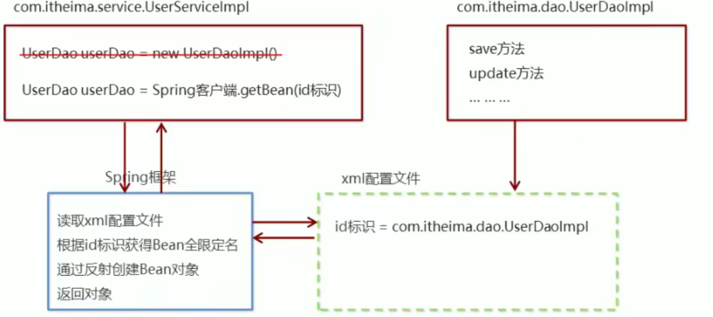

SpringIoC&DI
1. spring概述
1.1 Spring是什么
Spring是分层的 Java SE/EE应用 full-stack 轻量级开源框架，以 IoC（Inverse Of Control）和 AOP（Aspect Oriented Programming）为内核
spring理念使现有的技术更加容易使用，提供了展现层 SpringMVC和持久层 Spring JDBCTemplate以及业务层事务管理等众多的企业级应用技术，还能整合开源世界众多著名的第三方框架和类库，逐渐成为使用最多的Java EE 企业应用开源框架
Maven仓库：导入webmvc包会自动导入相关依赖
<!-- https://mvnrepository.com/artifact/org.springframework/spring-webmvc -->
<dependency>
<groupId>org.springframework</groupId>
<artifactId>spring-webmvc</artifactId>
<version>5.2.0.RELEASE</version>
</dependency>
<!-- https://mvnrepository.com/artifact/org.springframework/spring-jdbc -->
<dependency>
<groupId>org.springframework</groupId>
<artifactId>spring-jdbc</artifactId>
<version>5.2.0.RELEASE</version>
</dependency>1.2 优点
1.2 Spring的优势
①方便解耦，简化开发
②AOP 编程的支持
③声明式事务的支持
④方便程序的测试
⑤方便集成各种优秀框架
⑥降低JavaEE API的使用难度
1.3 Spring的体系结构（了解）

2. spring快速入门
2.1 Spring程序开发步骤
①导入 Spring 开发的基本包坐标
②编写 Dao 接口和实现类
③创建 Spring 核心配置文件
④在 Spring 配置文件中配置 UserDaoImpl
⑤使用 Spring 的 API 获得 Bean 实例
2.2 导入Spring开发的基本包坐标
<properties>
<spring.version>5.0.5.RELEASE</spring.version>
</properties>
<!--导入spring的context坐标，context依赖core、beans、expression-->
<dependencies>
<dependency>
<groupId>org.springframework</groupId>
<artifactId>spring-context</artifactId>
<version>${spring.version}</version>
</dependency>
</dependencies>2.3 编写Dao接口和实现类
public interface UserDao {
public void save();
}
public class UserDaoImpl implements UserDao {
@Override
public void save() {
System.out.println("UserDao save method running....");
}
}2.4 创建Spring核心配置文件
在类路径下（resources）创建applicationContext.xml配置文件
<?xml version="1.0" encoding="UTF-8" ?>
<beans xmlns="http://www.springframework.org/schema/beans" xmlns:xsi="http://www.w3.org/2001/XMLSchema-instance"
xsi:schemaLocation="
http://www.springframework.org/schema/beans http://www.springframework.org/schema/beans/spring-beans.xsd">
</beans>2.5 在Spring配置文件中配置UserDaoImpl
<?xml version="1.0" encoding="UTF-8" ?>
<beans xmlns="http://www.springframework.org/schema/beans" xmlns:xsi="http://www.w3.org/2001/XMLSchema-instance"
xsi:schemaLocation="
http://www.springframework.org/schema/beans http://www.springframework.org/schema/beans/spring-beans.xsd">
<bean id="userDao" class="com.itheima.dao.impl.UserDaoImpl"></bean>
</beans>2.6 使用Spring的API获得Bean实例
@Test
public void test1(){
ApplicationContext applicationContext = new
ClassPathXmlApplicationContext("applicationContext.xml");
UserDao userDao = (UserDao) applicationContext.getBean("userDao"); userDao.save();
}3. Spring配置文件
知识要点
<bean>标签
id属性：Bean实例在Spring容器中的唯一标识，不允许允许
class属性：要实例化的Bean的全限定名
scope属性:Bean的作用范围
<property>标签：属性注入
name属性：属性名称
value属性：注入的普通属性值
ref属性：注入的对象引用值
<list>标签
<map>标签
<properties>标签
<constructor-arg>标签
<import>标签：导入其他的配置文件3.1 Bean标签基本配置
用于配置对象交由Spring 来创建
默认情况下它调用的是类中的无参构造函数，如果没有无参构造函数则不能创建成功
基本属性：
id：Bean实例在Spring容器中的唯一标识
class：Bean的全限定名称
3.2 Bean标签范围配置
scope:指对象的作用范围，取值如下：
| 取值范围 | 说明 |
|---|---|
| singleton | 默认值，单例的 |
| prototype | 多例的 |
| request | WEB 项目中，Spring 创建一个 Bean 的对象，将对象存入到 request 域中 |
| session | WEB 项目中，Spring 创建一个 Bean 的对象，将对象存入到 session 域中 |
| global session | WEB 项目中，应用在 Portlet 环境，如果没有 Portlet 环境那么globalSession 相当于 session |
①当scope的取值为singleton时
Bean的实例化个数：1个
Bean的实例化时机：当Spring核心文件被加载时，实例化配置的Bean实例
Bean的生命周期：
对象创建：当应用加载，创建容器时，对象就被创建了
对象运行：只要容器在，对象一直活着
对象销毁：当应用卸载，销毁容器时，对象就被销毁了
②当scope的取值为prototype时
Bean的实例化个数：多个
Bean的实例化时机：当调用getBean()方法时实例化Bean
对象创建：当使用对象时，创建新的对象实例
对象运行：只要对象在使用中，就一直活着
对象销毁：当对象长时间不用时，被 Java 的垃圾回收器回收了
3.3 Bean生命周期配置
init-method：指定类中的初始化方法名称
destroy-method：指定类中销毁方法名称
3.4 Bean实例化三种方式
①使用无参构造方法实例化
它会根据默认无参构造方法来创建类对象，如果bean中没有默认无参构造函数，将会创建失败
<bean id="userDao" class="com.itheima.dao.impl.UserDaoImpl"/>② 工厂静态方法实例化
工厂的静态方法返回Bean实例
public class StaticFactoryBean {
public static UserDao createUserDao(){
return new UserDaoImpl();
}
}<bean id="userDao" class="com.itheima.factory.StaticFactoryBean"
factory-method="createUserDao" />③工厂实例方法实例化
工厂的非静态方法返回Bean实例
public class DynamicFactoryBean {
public UserDao createUserDao(){
return new UserDaoImpl();
}
}<bean id="factoryBean" class="com.itheima.factory.DynamicFactoryBean"/>
<bean id="userDao" factory-bean="factoryBean" factory-method="createUserDao"/>3.5 Bean的依赖注入入门
①创建 UserService，UserService 内部在调用 UserDao的save() 方法
public class UserServiceImpl implements UserService {
@Override
public void save() {
ApplicationContext applicationContext = new
ClassPathXmlApplicationContext("applicationContext.xml"); UserDao userDao = (UserDao) applicationContext.getBean("userDao");
userDao.save();
}
}②将 UserServiceImpl 的创建权交给 Spring
<bean id="userService" class="com.itheima.service.impl.UserServiceImpl"/>③从 Spring 容器中获得 UserService 进行操作
ApplicationContext applicationContext = new ClassPathXmlApplicationContext("applicationContext.xml");
UserService userService = (UserService) applicationContext.getBean("userService");
userService.save();
3.6 Bean的依赖注入概念


依赖注入Dependency Injection：它是 Spring 框架核心 IOC 的具体实现
在编写程序时，通过控制反转，把对象的创建交给了 Spring，但是代码中不可能出现没有依赖的情况。
IOC 解耦只是降低他们的依赖关系，但不会消除。例如：业务层仍会调用持久层的方法。
那这种业务层和持久层的依赖关系，在使用 Spring 之后，就让 Spring 来维护了。
简单的说，就是坐等框架把持久层对象传入业务层，而不用我们自己去获取
3.7 Bean的依赖注入方式
①构造方法
创建有参构造
public class UserServiceImpl implements UserService {
private UserDao userDao;
public UserServiceImpl(UserDao userDao) {
this.userDao = userDao;
}
public UserServiceImpl(){}
public void save() {
userDao.save();
}
} 配置Spring容器调用有参构造时进行注入
<bean id="userDao" class="com.itheima.dao.impl.UserDaoImpl"/>
<bean id="userService" class="com.itheima.service.impl.UserServiceImpl">
<constructor-arg name="userDao" ref="userDao"></constructor-arg>
</bean>②set方法
在UserServiceImpl中添加setUserDao方法
public class UserServiceImpl implements UserService {
private UserDao userDao;
public void setUserDao(UserDao userDao) {
this.userDao = userDao;
}
@Override
public void save() {
userDao.save();
}
} 配置Spring容器调用set方法进行注入
<bean id="userDao" class="com.itheima.dao.impl.UserDaoImpl"/>
<bean id="userService" class="com.itheima.service.impl.UserServiceImpl">
<property name="userDao" ref="userDao"/>
</bean>set方法:P命名空间注入
P命名空间注入本质也是set方法注入，但比起上述的set方法注入更加方便，主要体现在配置文件中，如下：
首先，需要引入P命名空间：
xmlns:p="http://www.springframework.org/schema/p" 其次，需要修改注入方式
<bean id="userService" class="com.itheima.service.impl.UserServiceImpl" p:userDao-ref="userDao"/>3.8 Bean的依赖注入的数据类型
上面的操作，都是注入的引用Bean，除了对象的引用可以注入，普通数据类型，集合等都可以在容器中进行注入。
注入数据的三种数据类型
普通数据类型
引用数据类型
集合数据类型
其中引用数据类型此处不再赘述，之前的操作都是对UserDao对象的引用进行注入的，下面将以set方法注入为例，演示普通数据类型和集合数据类型的注入。
Bean的依赖注入的数据类型
①普通数据类型的注入（set方法注入）
public class UserDaoImpl implements UserDao {
private String company;
private int age;
public void setCompany(String company) {
this.company = company;
}
public void setAge(int age) {
this.age = age;
}
public void save() {
System.out.println(company+"==="+age);
System.out.println("UserDao save method running....");
}
}<bean id="userDao" class="com.itheima.dao.impl.UserDaoImpl">
<property name="company" value="宵烛"></property>
<property name="age" value="15"></property>
</bean> ②集合数据类型（List
public class UserDaoImpl implements UserDao {
private List<String> strList;
public void setStrList(List<String> strList) {
this.strList = strList;
}
public void save() {
System.out.println(strList);
System.out.println("UserDao save method running....");
}
}<bean id="userDao" class="com.itheima.dao.impl.UserDaoImpl">
<property name="strList">
<list>
<value>aaa</value>
<value>bbb</value>
<value>ccc</value>
</list>
</property>
</bean>③集合数据类型（List
public class UserDaoImpl implements UserDao {
private List<User> userList;
public void setUserList(List<User> userList) {
this.userList = userList;
}
public void save() {
System.out.println(userList);
System.out.println("UserDao save method running....");
}
}<bean id="u1" class="com.itheima.domain.User"/>
<bean id="u2" class="com.itheima.domain.User"/>
<bean id="userDao" class="com.itheima.dao.impl.UserDaoImpl">
<property name="userList">
<list>
<!--<bean class="com.itheima.domain.User"/>
<bean class="com.itheima.domain.User"/>-->
<ref bean="u1"/>
<ref bean="u2"/>
</list>
</property>
</bean>④集合数据类型（ Map<String,User> ）的注入
public class UserDaoImpl implements UserDao {
private Map<String,User> userMap;
public void setUserMap(Map<String, User> userMap) {
this.userMap = userMap;
}
public void save() {
System.out.println(userMap);
System.out.println("UserDao save method running....");
}
}<bean id="u1" class="com.itheima.domain.User"/>
<bean id="u2" class="com.itheima.domain.User"/>
<bean id="userDao" class="com.itheima.dao.impl.UserDaoImpl">
<property name="userMap">
<map>
<entry key="user1" value-ref="u1"/>
<entry key="user2" value-ref="u2"/>
</map>
</property>
</bean>⑤集合数据类型（Properties）的注入
public class UserDaoImpl implements UserDao {
private Properties properties;
public void setProperties(Properties properties) {
this.properties = properties;
}
public void save() {
System.out.println(properties);
System.out.println("UserDao save method running....");
}
}<bean id="userDao" class="com.itheima.dao.impl.UserDaoImpl">
<property name="properties">
<props>
<prop key="p1">aaa</prop>
<prop key="p2">bbb</prop>
<prop key="p3">ccc</prop>
</props>
</property>
</bean>3.9 引入其他配置文件（分模块开发）
实际开发中，Spring的配置内容非常多，这就导致Spring配置很繁杂且体积很大，所以，可以将部分配置拆解到其他配置文件中，而在Spring主配置文件通过import标签进行加载
<import resource="applicationContext-xxx.xml"/>4. spring相关API
4.1 ApplicationContext的继承体系
applicationContext：接口类型，代表应用上下文，可以通过其实例获得 Spring 容器中的 Bean 对象

4.2 ApplicationContext的实现类
①ClassPathXmlApplicationContext
它是从类的根路径下加载配置文件 推荐使用这种
②FileSystemXmlApplicationContext
它是从磁盘路径上加载配置文件，配置文件可以在磁盘的任意位置。
③AnnotationConfigApplicationContext
当使用注解配置容器对象时，需要使用此类来创建 spring 容器。它用来读取注解。
4.3 getBean()方法使用
源码
public Object getBean(String name) throws BeansException {
assertBeanFactoryActive();
return getBeanFactory().getBean(name);
}
public <T> T getBean(Class<T> requiredType) throws BeansException { assertBeanFactoryActive();
return getBeanFactory().getBean(requiredType);
}其中，当参数的数据类型是字符串时，表示根据Bean的id从容器中获得Bean实例，返回是Object，需要强转。
当参数的数据类型是Class类型时，表示根据类型从容器中匹配Bean实例，当容器中相同类型的Bean有多个时，则此方法会报错
getBean()方法使用
ApplicationContext applicationContext = new
ClassPathXmlApplicationContext("applicationContext.xml");
UserService userService1 = (UserService) applicationContext.getBean("userService");
UserService userService2 = applicationContext.getBean(UserService.class);spring注解开发
1.Spring配置数据源
1.1 数据源（连接池）的作用
数据源(连接池)是提高程序性能如出现的
事先实例化数据源，初始化部分连接资源
使用连接资源时从数据源中获取
使用完毕后将连接资源归还给数据源
常见的数据源(连接池)：DBCP、C3P0、BoneCP、Druid等
开发步骤
①导入数据源的坐标和数据库驱动坐标
②创建数据源对象
③设置数据源的基本连接数据
④使用数据源获取连接资源和归还连接资源
1.2 数据源的手动创建
①导入c3p0和druid的坐标
<!-- C3P0连接池 -->
<dependency>
<groupId>c3p0</groupId>
<artifactId>c3p0</artifactId>
<version>0.9.1.2</version>
</dependency>
<!-- Druid连接池 -->
<dependency>
<groupId>com.alibaba</groupId>
<artifactId>druid</artifactId>
<version>1.1.10</version>
</dependency>①导入mysql数据库驱动坐标
<!-- mysql驱动 -->
<dependency>
<groupId>mysql</groupId>
<artifactId>mysql-connector-java</artifactId>
<version>5.1.39</version>
</dependency>②创建C3P0连接池
@Test
public void testC3P0() throws Exception {
//创建数据源
ComboPooledDataSource dataSource = new ComboPooledDataSource();
//设置数据库连接参数
dataSource.setDriverClass("com.mysql.jdbc.Driver"); dataSource.setJdbcUrl("jdbc:mysql://localhost:3306/test");
dataSource.setUser("root");
dataSource.setPassword("root");
//获得连接对象
Connection connection = dataSource.getConnection();
System.out.println(connection);
}
②创建Druid连接池
@Test
public void testDruid() throws Exception {
//创建数据源
DruidDataSource dataSource = new DruidDataSource();
//设置数据库连接参数
dataSource.setDriverClassName("com.mysql.jdbc.Driver");
dataSource.setUrl("jdbc:mysql://localhost:3306/test");
dataSource.setUsername("root");
dataSource.setPassword("root");
//获得连接对象
Connection connection = dataSource.getConnection();
System.out.println(connection);
}③提取jdbc.properties配置文件
jdbc.driver=com.mysql.jdbc.Driver
jdbc.url=jdbc:mysql://localhost:3306/test
jdbc.username=root
jdbc.password=root④读取jdbc.properties配置文件创建连接池
@Test
public void testC3P0ByProperties() throws Exception {
//加载类路径下的jdbc.properties
ResourceBundle rb = ResourceBundle.getBundle("jdbc");
ComboPooledDataSource dataSource = new ComboPooledDataSource();
dataSource.setDriverClass(rb.getString("jdbc.driver"));
dataSource.setJdbcUrl(rb.getString("jdbc.url"));
dataSource.setUser(rb.getString("jdbc.username"));
dataSource.setPassword(rb.getString("jdbc.password"));
Connection connection = dataSource.getConnection();
System.out.println(connection);
}1.3 Spring配置数据源
可以将DataSource的创建权交由Spring容器去完成
DataSource有无参构造方法，而Spring默认就是通过无参构造方法实例化对象的
DataSource要想使用需要通过set方法设置数据库连接信息，而Spring可以通过set方法进行字符串注入
<bean id="dataSource" class="com.mchange.v2.c3p0.ComboPooledDataSource">
<property name="driverClass" value="com.mysql.jdbc.Driver"/>
<property name="jdbcUrl" value="jdbc:mysql://localhost:3306/test"/>
<property name="user" value="root"/>
<property name="password" value="root"/>
</bean>测试从容器当中获取数据源
ApplicationContext applicationContext = new
ClassPathXmlApplicationContext("applicationContext.xml");
DataSource dataSource = (DataSource)
applicationContext.getBean("dataSource");
Connection connection = dataSource.getConnection();
System.out.println(connection);1.4 抽取jdbc配置文件
applicationContext.xml加载jdbc.properties配置文件获得连接信息。
首先，需要引入context命名空间和约束路径：
命名空间：xmlns:context=”http://www.springframework.org/schema/context"
约束路径：http://www.springframework.org/schema/context
http://www.springframework.org/schema/context/spring-context.xsd
<context:property-placeholder location="classpath:jdbc.properties"/>
<bean id="dataSource" class="com.mchange.v2.c3p0.ComboPooledDataSource">
<property name="driverClass" value="${jdbc.driver}"/>
<property name="jdbcUrl" value="${jdbc.url}"/>
<property name="user" value="${jdbc.username}"/>
<property name="password" value="${jdbc.password}"/>
</bean>1.5 知识要点
Spring容器加载properties文件
<context:property-placeholder location="xx.properties"/>
<property name="" value="${key}"/>2. Spring注解开发
2.1 Spring原始注解
Spring是轻代码而重配置的框架，配置比较繁重，影响开发效率，所以注解开发是一种趋势，注解代替xml配置文件可以简化配置，提高开发效率。
Spring原始注解主要是替代
| 注解 | 说明 |
|---|---|
| @Component | 使用在类上用于实例化Bean |
| @Controller | 使用在web层类上用于实例化Bean |
| @Service | 使用在service层类上用于实例化Bean |
| @Repository | 使用在dao层类上用于实例化Bean |
| @Autowired | 使用在字段上用于根据类型依赖注入 |
| @Qualifier | 结合@Autowired一起使用用于根据名称进行依赖注入 |
| @Resource | 相当于@Autowired+@Qualifier，按照名称进行注入 |
| @Value | 注入普通属性 |
| @Scope | 标注Bean的作用范围 |
| @PostConstruct | 使用在方法上标注该方法是Bean的初始化方法 |
| @PreDestroy | 使用在方法上标注该方法是Bean的销毁方法 |
注意：
使用注解进行开发时，需要在applicationContext.xml中配置组件扫描，作用是指定哪个包及其子包下的Bean需要进行扫描以便识别使用注解配置的类、字段和方法。
<!--配置注解的组件扫描-->
<context:component-scan base-package="com.itheima"></context:component-scan>使用@Compont或@Repository标识UserDaoImpl需要Spring进行实例化
//@Component("userDao")
@Repository("userDao")
public class UserDaoImpl implements UserDao {
@Override
public void save() {
System.out.println("save running... ...");
}
}使用@Compont或@Service标识UserServiceImpl需要Spring进行实例化
使用@Autowired或者@Autowired+@Qulifier或者@Resource进行userDao的注入
//@Component("userService")
@Service("userService")
public class UserServiceImpl implements UserService {
/*@Autowired
@Qualifier("userDao")*/
@Resource(name="userDao")
private UserDao userDao;
@Override
public void save() {
userDao.save();
}
}使用@Value进行字符串的注入
@Repository("userDao")
public class UserDaoImpl implements UserDao {
@Value("注入普通数据")
private String str;
@Value("${jdbc.driver}")
private String driver;
@Override
public void save() {
System.out.println(str);
System.out.println(driver);
System.out.println("save running... ...");
}
}使用@Scope标注Bean的范围
//@Scope("prototype")
@Scope("singleton")
public class UserDaoImpl implements UserDao {
//此处省略代码
}使用@PostConstruct标注初始化方法，使用@PreDestroy标注销毁方法
@PostConstruct
public void init(){
System.out.println("初始化方法....");
}
@PreDestroy
public void destroy(){
System.out.println("销毁方法.....");
}2.2 Spring新注解
使用上面的注解还不能全部替代xml配置文件，还需要使用注解替代的配置如下：
非自定义的Bean的配置：
加载properties文件的配置：context:property-placeholder
组件扫描的配置：context:component-scan
引入其他文件：
| 注解 | 说明 |
|---|---|
| @Configuration | 用于指定当前类是一个 Spring 配置类，当创建容器时会从该类上加载注解 |
| @ComponentScan | 用于指定 Spring 在初始化容器时要扫描的包。 作用和在 Spring 的 xml 配置文件中的 <context:component-scan base-package=”com.itheima”/>一样 |
| @Bean | 使用在方法上，标注将该方法的返回值存储到 Spring 容器中 |
| @PropertySource | 用于加载.properties 文件中的配置 |
| @Import | 用于导入其他配置类 |
@Configuration
@ComponentScan
@Import
@Configuration
@ComponentScan("com.itheima")
@Import({DataSourceConfiguration.class})
public class SpringConfiguration {
}@PropertySource
@value
@PropertySource("classpath:jdbc.properties")
public class DataSourceConfiguration {
@Value("${jdbc.driver}")
private String driver;
@Value("${jdbc.url}")
private String url;
@Value("${jdbc.username}")
private String username;
@Value("${jdbc.password}")
private String password;@Bean
@Bean(name="dataSource")
public DataSource getDataSource() throws PropertyVetoException {
ComboPooledDataSource dataSource = new ComboPooledDataSource();
dataSource.setDriverClass(driver);
dataSource.setJdbcUrl(url);
dataSource.setUser(username);
dataSource.setPassword(password);
return dataSource;
} 测试加载核心配置类创建Spring容器
@Test
public void testAnnoConfiguration() throws Exception {
ApplicationContext applicationContext = new
AnnotationConfigApplicationContext(SpringConfiguration.class); UserService userService = (UserService)
applicationContext.getBean("userService");
userService.save();
DataSource dataSource = (DataSource)
applicationContext.getBean("dataSource");
Connection connection = dataSource.getConnection();
System.out.println(connection);
}3. Spring整合Junit
3.1 原始Junit测试Spring的问题
在测试类中，每个测试方法都有以下两行代码：
ApplicationContext ac = new ClassPathXmlApplicationContext("bean.xml");
IAccountService as = ac.getBean("accountService",IAccountService.class);这两行代码的作用是获取容器，如果不写的话，直接会提示空指针异常。所以又不能轻易删掉。
3.2 上述问题解决思路
让SpringJunit负责创建Spring容器，但是需要将配置文件的名称告诉它
将需要进行测试Bean直接在测试类中进行注入
3.3 Spring集成Junit步骤
①导入spring集成Junit的坐标
②使用@Runwith注解替换原来的运行期
③使用@ContextConfiguration指定配置文件或配置类
④使用@Autowired注入需要测试的对象
⑤创建测试方法进行测试
3.4 Spring集成Junit代码实现
①导入spring集成Junit的坐标
<!--此处需要注意的是，spring5 及以上版本要求 junit 的版本必须是 4.12 及以上-->
<dependency>
<groupId>org.springframework</groupId>
<artifactId>spring-test</artifactId>
<version>5.0.2.RELEASE</version>
</dependency>
<dependency>
<groupId>junit</groupId>
<artifactId>junit</artifactId>
<version>4.12</version>
<scope>test</scope>
</dependency>②使用@Runwith注解替换原来的运行期
@RunWith(SpringJUnit4ClassRunner.class)
public class SpringJunitTest {
}③使用@ContextConfiguration指定配置文件或配置类
@RunWith(SpringJUnit4ClassRunner.class)
//加载spring核心配置文件
//@ContextConfiguration(value = {"classpath:applicationContext.xml"})
//加载spring核心配置类
@ContextConfiguration(classes = {SpringConfiguration.class})
public class SpringJunitTest {
}④使用@Autowired注入需要测试的对象
@RunWith(SpringJUnit4ClassRunner.class)
@ContextConfiguration(classes = {SpringConfiguration.class})
public class SpringJunitTest {
@Autowired
private UserService userService;
}⑤创建测试方法进行测试
@RunWith(SpringJUnit4ClassRunner.class)
@ContextConfiguration(classes = {SpringConfiguration.class})
public class SpringJunitTest {
@Autowired
private UserService userService;
@Test
public void testUserService(){
userService.save();
}
}Spring集成Junit步骤
①导入spring集成Junit的坐标
②使用@Runwith注解替换原来的运行期
③使用@ContextConfiguration指定配置文件或配置类
④使用@Autowired注入需要测试的对象
⑤创建测试方法进行测试
spring AOP
1.Spring 的 AOP 简介
1.1 什么是 AOP
AOP(Aspect Oriented Programming)面向切面编程是通过预编译方式和运行期动态代理实现程序功能的统一维护的一种技术。
AOP 是 OOP 的延续，是函数式编程的一种衍生范型。利用AOP可以对业务逻辑的各个部分进行隔离，从而使得业务逻辑各部分间的耦合度降低，提高程序的可重用性，同时提高了开发的效率。
1.2 AOP 的作用及其优势
作用：在程序运行期间，在不修改源码的情况下对方法进行功能增强
优势：减少重复代码，提高开发效率，并且便于维护
1.3 AOP 的底层实现
实际上，AOP 的底层是通过 Spring 提供的的动态代理技术实现的。在运行期间，Spring通过动态代理技术动态的生成代理对象，代理对象方法执行时进行增强功能的介入，在去调用目标对象的方法，从而完成功能的增强。
1.4 AOP 的动态代理技术
常用的动态代理技术
JDK 代理 : 基于接口的动态代理技术
cglib 代理：基于父类的动态代理技术

1.5 JDK 的动态代理
①目标类接口
public interface TargetInterface {
public void method();
}②目标类
public class Target implements TargetInterface {
@Override
public void method() {
System.out.println("Target running....");
}
}③动态代理代码
Target target = new Target(); //创建目标对象
//创建代理对象
TargetInterface proxy = (TargetInterface) Proxy.newProxyInstance(target.getClass()
.getClassLoader(),target.getClass().getInterfaces(),new InvocationHandler() {
@Override
public Object invoke(Object proxy, Method method, Object[] args)
throws Throwable {
System.out.println("前置增强代码...");
Object invoke = method.invoke(target, args);
System.out.println("后置增强代码...");
return invoke;
}
}
);④ 调用代理对象的方法测试
// 测试,当调用接口的任何方法时，代理对象的代码都无序修改
proxy.method();
1.6 cglib 的动态代理
①目标类
public class Target {
public void method() {
System.out.println("Target running....");
}
}②动态代理代码
Target target = new Target(); //创建目标对象
Enhancer enhancer = new Enhancer(); //创建增强器
enhancer.setSuperclass(Target.class); //设置父类
enhancer.setCallback(new MethodInterceptor() { //设置回调
@Override
public Object intercept(Object o, Method method, Object[] objects,
MethodProxy methodProxy) throws Throwable {
System.out.println("前置代码增强....");
Object invoke = method.invoke(target, objects);
System.out.println("后置代码增强....");
return invoke;
}
});
Target proxy = (Target) enhancer.create(); //创建代理对象
③调用代理对象的方法测试
//测试,当调用接口的任何方法时，代理对象的代码都无序修改
proxy.method();
1.7 AOP 相关概念
Spring 的 AOP 实现底层就是对上面的动态代理的代码进行了封装，封装后我们只需要对需要关注的部分进行代码编写，并通过配置的方式完成指定目标的方法增强。
在正式讲解 AOP 的操作之前，我们必须理解 AOP 的相关术语，常用的术语如下：
Target（目标对象）：代理的目标对象
Proxy （代理）：一个类被 AOP 织入增强后，就产生一个结果代理类
Joinpoint（连接点）：所谓连接点是指那些被拦截到的点。在spring中,这些点指的是方法，因为spring只支持方法类型的连接点
Pointcut（切入点）：所谓切入点是指我们要对哪些 Joinpoint 进行拦截的定义
Advice（通知/ 增强）：所谓通知是指拦截到 Joinpoint 之后所要做的事情就是通知
Aspect（切面）：是切入点和通知（引介）的结合
Weaving（织入）：是指把增强应用到目标对象来创建新的代理对象的过程。spring采用动态代理织入，而AspectJ采用编译期织入和类装载期织入
1.8 AOP 开发明确的事项
1.8 AOP 开发明确的事项
1.8 AOP 开发明确的事项
1)需要编写的内容
编写核心业务代码（目标类的目标方法）
编写切面类，切面类中有通知(增强功能方法)
在配置文件中，配置织入关系，即将哪些通知与哪些连接点进行结合
2）AOP 技术实现的内容
Spring 框架监控切入点方法的执行。一旦监控到切入点方法被运行，使用代理机制，动态创建目标对象的代理对象，根据通知类别，在代理对象的对应位置，将通知对应的功能织入，完成完整的代码逻辑运行。
3）AOP 底层使用哪种代理方式
在 spring 中，框架会根据目标类是否实现了接口来决定采用哪种动态代理的方式。
1.9 知识要点
aop：面向切面编程
aop底层实现：基于JDK的动态代理 和 基于Cglib的动态代理
aop的重点概念：
Pointcut（切入点）：被增强的方法 Advice（通知/ 增强）：封装增强业务逻辑的方法 Aspect（切面）：切点+通知 Weaving（织入）：将切点与通知结合的过程开发明确事项：
谁是切点（切点表达式配置） 谁是通知（切面类中的增强方法） 将切点和通知进行织入配置
2. 基于 XML 的 AOP 开发
2.1 快速入门
①导入 AOP 相关坐标
②创建目标接口和目标类（内部有切点）
③创建切面类（内部有增强方法）
④将目标类和切面类的对象创建权交给 spring
⑤在 applicationContext.xml 中配置织入关系
⑥测试代码
①导入 AOP 相关坐标
<!--导入spring的context坐标，context依赖aop-->
<dependency>
<groupId>org.springframework</groupId>
<artifactId>spring-context</artifactId>
<version>5.0.5.RELEASE</version>
</dependency>
<!-- aspectj的织入 -->
<dependency>
<groupId>org.aspectj</groupId>
<artifactId>aspectjweaver</artifactId>
<version>1.8.13</version>
</dependency>②创建目标接口和目标类（内部有切点）
public interface TargetInterface {
public void method();
}
public class Target implements TargetInterface {
@Override
public void method() {
System.out.println("Target running....");
}
}③创建切面类（内部有增强方法）
public class MyAspect {
//前置增强方法
public void before(){
System.out.println("前置代码增强.....");
}
}④将目标类和切面类的对象创建权交给 spring
<!--配置目标类-->
<bean id="target" class="com.itheima.aop.Target"></bean>
<!--配置切面类-->
<bean id="myAspect" class="com.itheima.aop.MyAspect"></bean>
⑤在 applicationContext.xml 中配置织入关系
导入aop命名空间
<beans xmlns="http://www.springframework.org/schema/beans"
xmlns:xsi="http://www.w3.org/2001/XMLSchema-instance"
xmlns:context="http://www.springframework.org/schema/context"
xmlns:aop="http://www.springframework.org/schema/aop"
xsi:schemaLocation="
http://www.springframework.org/schema/context
http://www.springframework.org/schema/context/spring-context.xsd
http://www.springframework.org/schema/aop
http://www.springframework.org/schema/aop/spring-aop.xsd
http://www.springframework.org/schema/beans
http://www.springframework.org/schema/beans/spring-beans.xsd">
⑤在 applicationContext.xml 中配置织入关系
配置切点表达式和前置增强的织入关系
<aop:config>
<!--引用myAspect的Bean为切面对象-->
<aop:aspect ref="myAspect">
<!--配置Target的method方法执行时要进行myAspect的before方法前置增强-->
<aop:before method="before" pointcut="execution(public void com.itheima.aop.Target.method())"></aop:before>
</aop:aspect>
</aop:config>⑥测试代码
@RunWith(SpringJUnit4ClassRunner.class)
@ContextConfiguration("classpath:applicationContext.xml")
public class AopTest {
@Autowired
private TargetInterface target;
@Test
public void test1(){
target.method();
}
}⑦测试结果

2.2 XML 配置 AOP 详解
1) 切点表达式的写法
表达式语法：
execution([修饰符] 返回值类型 包名.类名.方法名(参数))访问修饰符可以省略
返回值类型、包名、类名、方法名可以使用星号* 代表任意
包名与类名之间一个点 . 代表当前包下的类，两个点 .. 表示当前包及其子包下的类
参数列表可以使用两个点 .. 表示任意个数，任意类型的参数列表
例如：
execution(public void com.itheima.aop.Target.method())
execution(void com.itheima.aop.Target.*(..))
execution(* com.itheima.aop.*.*(..))
execution(* com.itheima.aop..*.*(..))
execution(* *..*.*(..))2) 通知的类型
通知的配置语法：
<aop:通知类型 method=“切面类中方法名” pointcut=“切点表达式"></aop:通知类型>
3) 切点表达式的抽取
当多个增强的切点表达式相同时，可以将切点表达式进行抽取，在增强中使用 pointcut-ref 属性代替 pointcut 属性来引用抽取后的切点表达式。
<aop:config>
<!--引用myAspect的Bean为切面对象-->
<aop:aspect ref="myAspect">
<aop:pointcut id="myPointcut" expression="execution(* com.itheima.aop.*.*(..))"/>
<aop:before method="before" pointcut-ref="myPointcut"></aop:before>
</aop:aspect>
</aop:config>2.3 知识要点
- aop织入的配置
<aop:config>
<aop:aspect ref=“切面类”>
<aop:before method=“通知方法名称” pointcut=“切点表达式"></aop:before>
</aop:aspect>
</aop:config>- 通知的类型：前置通知、后置通知、环绕通知、异常抛出通知、最终通知
- 切点表达式的写法：
execution([修饰符] 返回值类型 包名.类名.方法名(参数))3.基于注解的 AOP 开发
3.1 快速入门
基于注解的aop开发步骤：
①创建目标接口和目标类（内部有切点）
②创建切面类（内部有增强方法）
③将目标类和切面类的对象创建权交给 spring
④在切面类中使用注解配置织入关系
⑤在配置文件中开启组件扫描和 AOP 的自动代理
⑥测试
①创建目标接口和目标类（内部有切点）
public interface TargetInterface {
public void method();
}
public class Target implements TargetInterface {
@Override
public void method() {
System.out.println("Target running....");
}
}②创建切面类（内部有增强方法)
public class MyAspect {
//前置增强方法
public void before(){
System.out.println("前置代码增强.....");
}
}③将目标类和切面类的对象创建权交给 spring
@Component("target")
public class Target implements TargetInterface {
@Override
public void method() {
System.out.println("Target running....");
}
}
@Component("myAspect")
public class MyAspect {
public void before(){
System.out.println("前置代码增强.....");
}
}④在切面类中使用注解配置织入关系
@Component("myAspect")
@Aspect
public class MyAspect {
@Before("execution(* com.itheima.aop.*.*(..))")
public void before(){
System.out.println("前置代码增强.....");
}
}⑤在配置文件中开启组件扫描和 AOP 的自动代理
<!--组件扫描-->
<context:component-scan base-package="com.itheima.aop"/>
<!--aop的自动代理-->
<aop:aspectj-autoproxy></aop:aspectj-autoproxy>
⑥测试代码
@RunWith(SpringJUnit4ClassRunner.class)
@ContextConfiguration("classpath:applicationContext.xml")
public class AopTest {
@Autowired
private TargetInterface target;
@Test
public void test1(){
target.method();
}
}⑦测试结果

3.2 注解配置 AOP 详解
1) 注解通知的类型
通知的配置语法：@通知注解(“切点表达式”)

2) 切点表达式的抽取
同 xml配置
aop 一样，我们可以将切点表达式抽取。抽取方式是在切面内定义方法，在该方法上使用@Pointcut注解定义切点表达式，然后在在增强注解中进行引用。具体如下：
@@Component("myAspect")
@Aspect
public class MyAspect {
@Before("MyAspect.myPoint()")
public void before(){
System.out.println("前置代码增强.....");
}
@Pointcut("execution(* com.itheima.aop.*.*(..))")
public void myPoint(){}
}3.3 知识要点
- 注解aop开发步骤
①使用@Aspect标注切面类
②使用@通知注解标注通知方法
③在配置文件中配置aop自动代理aop:aspectj-autoproxy/
- 通知注解类型

JdbcTemplate基本使用
01-JdbcTemplate基本使用-概述(了解)
JdbcTemplate是spring框架中提供的一个对象，是对原始繁琐的Jdbc API对象的简单封装。spring框架为我们提供了很多的操作模板类。例如：操作关系型数据的JdbcTemplate和HibernateTemplate，操作nosql数据库的RedisTemplate，操作消息队列的JmsTemplate等等。
02-JdbcTemplate基本使用-开发步骤(理解)
①导入spring-jdbc和spring-tx坐标
②创建数据库表和实体
③创建JdbcTemplate对象
④执行数据库操作
03-JdbcTemplate基本使用-快速入门代码实现(应用)
导入spring-jdbc和spring-tx坐标
<?xml version="1.0" encoding="UTF-8"?>
<project xmlns="http://maven.apache.org/POM/4.0.0" xmlns:xsi="http://www.w3.org/2001/XMLSchema-instance"
xsi:schemaLocation="http://maven.apache.org/POM/4.0.0 http://maven.apache.org/xsd/maven-4.0.0.xsd">
<modelVersion>4.0.0</modelVersion>
<groupId>com.itheima</groupId>
<artifactId>itheima_spring_jdbc</artifactId>
<version>1.0-SNAPSHOT</version>
<packaging>war</packaging>
<name>itheima_spring_jdbc Maven Webapp</name>
<!-- FIXME change it to the project's website -->
<url>http://www.example.com</url>
<dependencies>
<dependency>
<groupId>mysql</groupId>
<artifactId>mysql-connector-java</artifactId>
<version>5.1.32</version>
</dependency>
<dependency>
<groupId>c3p0</groupId>
<artifactId>c3p0</artifactId>
<version>0.9.1.2</version>
</dependency>
<dependency>
<groupId>com.alibaba</groupId>
<artifactId>druid</artifactId>
<version>1.1.10</version>
</dependency>
<dependency>
<groupId>junit</groupId>
<artifactId>junit</artifactId>
<version>4.12</version>
</dependency>
<dependency>
<groupId>org.springframework</groupId>
<artifactId>spring-context</artifactId>
<version>5.0.5.RELEASE</version>
</dependency>
<dependency>
<groupId>org.springframework</groupId>
<artifactId>spring-test</artifactId>
<version>5.0.5.RELEASE</version>
</dependency>
<dependency>
<groupId>org.springframework</groupId>
<artifactId>spring-web</artifactId>
<version>5.0.5.RELEASE</version>
</dependency>
<dependency>
<groupId>org.springframework</groupId>
<artifactId>spring-webmvc</artifactId>
<version>5.0.5.RELEASE</version>
</dependency>
<dependency>
<groupId>javax.servlet</groupId>
<artifactId>javax.servlet-api</artifactId>
<version>3.0.1</version>
<scope>provided</scope>
</dependency>
<dependency>
<groupId>javax.servlet.jsp</groupId>
<artifactId>javax.servlet.jsp-api</artifactId>
<version>2.2.1</version>
<scope>provided</scope>
</dependency>
<dependency>
<groupId>com.fasterxml.jackson.core</groupId>
<artifactId>jackson-core</artifactId>
<version>2.9.0</version>
</dependency>
<dependency>
<groupId>com.fasterxml.jackson.core</groupId>
<artifactId>jackson-databind</artifactId>
<version>2.9.0</version>
</dependency>
<dependency>
<groupId>com.fasterxml.jackson.core</groupId>
<artifactId>jackson-annotations</artifactId>
<version>2.9.0</version>
</dependency>
<dependency>
<groupId>commons-fileupload</groupId>
<artifactId>commons-fileupload</artifactId>
<version>1.3.1</version>
</dependency>
<dependency>
<groupId>commons-io</groupId>
<artifactId>commons-io</artifactId>
<version>2.3</version>
</dependency>
<dependency>
<groupId>org.springframework</groupId>
<artifactId>spring-jdbc</artifactId>
<version>5.0.5.RELEASE</version>
</dependency>
<dependency>
<groupId>org.springframework</groupId>
<artifactId>spring-tx</artifactId>
<version>5.0.5.RELEASE</version>
</dependency>
</dependencies>
</project>
创建数据库表和实体

package com.itheima.domain;
public class Account {
private String name;
private double money;
public String getNa me() {
return name;
}
public void setName(String name) {
this.name = name;
}
public double getMoney() {
return money;
}
public void setMoney(double money) {
this.money = money;
}
@Override
public String toString() {
return "Account{" +
"name='" + name + '\'' +
", money=" + money +
'}';
}
}
创建JdbcTemplate对象
执行数据库操作
@Test
//测试JdbcTemplate开发步骤
public void test1() throws PropertyVetoException {
//创建数据源对象
ComboPooledDataSource dataSource = new ComboPooledDataSource();
dataSource.setDriverClass("com.mysql.jdbc.Driver");
dataSource.setJdbcUrl("jdbc:mysql://localhost:3306/test");
dataSource.setUser("root");
dataSource.setPassword("root");
JdbcTemplate jdbcTemplate = new JdbcTemplate();
//设置数据源对象 知道数据库在哪
jdbcTemplate.setDataSource(dataSource);
//执行操作
int row = jdbcTemplate.update("insert into account values(?,?)", "tom", 5000);
System.out.println(row);
}04-JdbcTemplate基本使用-spring产生模板对象分析(理解)
我们可以将JdbcTemplate的创建权交给Spring，将数据源DataSource的创建权也交给Spring，在Spring容器内部将数据源DataSource注入到JdbcTemplate模版对象中,然后通过Spring容器获得JdbcTemplate对象来执行操作。
05-JdbcTemplate基本使用-spring产生模板对象代码实现(应用)
配置如下：
<!--数据源对象-->
<bean id="dataSource" class="com.mchange.v2.c3p0.ComboPooledDataSource">
<property name="driverClass" value="com.mysql.jdbc.Driver"></property>
<property name="jdbcUrl" value="jdbc:mysql:///test"></property>
<property name="user" value="root"></property>
<property name="password" value="root"></property>
</bean>
<!--jdbc模板对象-->
<bean id="jdbcTemplate" class="org.springframework.jdbc.core.JdbcTemplate">
<property name="dataSource" ref="dataSource"/>
</bean>
测试代码
@Test
//测试Spring产生jdbcTemplate对象
public void test2() throws PropertyVetoException {
ApplicationContext app = new ClassPathXmlApplicationContext("applicationContext.xml");
JdbcTemplate jdbcTemplate = app.getBean(JdbcTemplate.class);
int row = jdbcTemplate.update("insert into account values(?,?)", "lisi", 5000);
System.out.println(row);
}06-JdbcTemplate基本使用-spring产生模板对象代码实现（抽取jdbc.properties）(应用)
将数据库的连接信息抽取到外部配置文件中，和spring的配置文件分离开，有利于后期维护
jdbc.driver=com.mysql.jdbc.Driver
jdbc.url=jdbc:mysql://localhost:3306/test
jdbc.username=root
jdbc.password=root配置文件修改为:
<?xml version="1.0" encoding="UTF-8"?>
<beans xmlns="http://www.springframework.org/schema/beans"
xmlns:xsi="http://www.w3.org/2001/XMLSchema-instance"
xmlns:context="http://www.springframework.org/schema/context"
xsi:schemaLocation="
http://www.springframework.org/schema/beans http://www.springframework.org/schema/beans/spring-beans.xsd
http://www.springframework.org/schema/context http://www.springframework.org/schema/context/spring-context.xsd
">
<!--加载jdbc.properties-->
<context:property-placeholder location="classpath:jdbc.properties"/>
<!--数据源对象-->
<bean id="dataSource" class="com.mchange.v2.c3p0.ComboPooledDataSource">
<property name="driverClass" value="${jdbc.driver}"/>
<property name="jdbcUrl" value="${jdbc.url}"/>
<property name="user" value="${jdbc.username}"/>
<property name="password" value="${jdbc.password}"/>
</bean>
<!--jdbc模板对象-->
<bean id="jdbcTemplate" class="org.springframework.jdbc.core.JdbcTemplate">
<property name="dataSource" ref="dataSource"/>
</bean>
</beans>07-JdbcTemplate基本使用-常用操作-更新操作(应用)
package com.itheima.test;
import com.itheima.domain.Account;
import org.junit.Test;
import org.junit.runner.RunWith;
import org.springframework.beans.factory.annotation.Autowired;
import org.springframework.jdbc.core.BeanPropertyRowMapper;
import org.springframework.jdbc.core.JdbcTemplate;
import org.springframework.test.context.ContextConfiguration;
import org.springframework.test.context.junit4.SpringJUnit4ClassRunner;
import java.util.List;
@RunWith(SpringJUnit4ClassRunner.class)
@ContextConfiguration("classpath:applicationContext.xml")
public class JdbcTemplateCRUDTest {
@Autowired
private JdbcTemplate jdbcTemplate;
//修改更新
@Test
public void testUpdate(){
jdbcTemplate.update("update account set money=? where name=?",10000,"tom");
}
//删除
@Test
public void testDelete(){
jdbcTemplate.update("delete from account where name=?","tom");
}
}
08-JdbcTemplate基本使用-常用操作-查询操作(应用)
package com.itheima.test;
import com.itheima.domain.Account;
import org.junit.Test;
import org.junit.runner.RunWith;
import org.springframework.beans.factory.annotation.Autowired;
import org.springframework.jdbc.core.BeanPropertyRowMapper;
import org.springframework.jdbc.core.JdbcTemplate;
import org.springframework.test.context.ContextConfiguration;
import org.springframework.test.context.junit4.SpringJUnit4ClassRunner;
import java.util.List;
@RunWith(SpringJUnit4ClassRunner.class)
@ContextConfiguration("classpath:applicationContext.xml")
public class JdbcTemplateCRUDTest {
@Autowired
private JdbcTemplate jdbcTemplate;
//聚合查询
@Test
public void testQueryCount(){
Long count = jdbcTemplate.queryForObject("select count(*) from account", Long.class);
System.out.println(count);
}
//查询一个
@Test
public void testQueryOne(){
Account account = jdbcTemplate.queryForObject("select * from account where name=?", new BeanPropertyRowMapper<Account>(Account.class), "tom");
System.out.println(account);
}
//查询所有
@Test
public void testQueryAll(){
List<Account> accountList = jdbcTemplate.query("select * from account", new BeanPropertyRowMapper<Account>(Account.class));
System.out.println(accountList);
}
}09-JdbcTemplate基本使用-知识要点(理解，记忆)
①导入spring-jdbc和spring-tx坐标
②创建数据库表和实体
③创建JdbcTemplate对象
JdbcTemplate jdbcTemplate = newJdbcTemplate();
jdbcTemplate.setDataSource(dataSource);④执行数据库操作
更新操作：
jdbcTemplate.update (sql,params)
查询操作：
jdbcTemplate.query (sql,Mapper,params)
jdbcTemplate.queryForObject(sql,Mapper,params)声明式事务控制
1. 编程式事务控制相关对象
1.1 PlatformTransactionManager
PlatformTransactionManager 接口是 spring 的事务管理器，它里面提供了我们常用的操作事务的方法。

注意：
PlatformTransactionManager 是接口类型，不同的 Dao 层技术则有不同的实现类，例如：Dao 层技术是jdbc 或 mybatis 时：org.springframework.jdbc.datasource.DataSourceTransactionManager
Dao 层技术是hibernate时：org.springframework.orm.hibernate5.HibernateTransactionManager
1.2 TransactionDefinition
TransactionDefinition 是事务的定义信息对象，里面有如下方法：

1. 事务隔离级别
设置隔离级别，可以解决事务并发产生的问题，如脏读、不可重复读和虚读。
ISOLATION_DEFAULT
ISOLATION_READ_UNCOMMITTED
ISOLATION_READ_COMMITTED
ISOLATION_REPEATABLE_READ
ISOLATION_SERIALIZABLE
2. 事务传播行为
REQUIRED：如果当前没有事务，就新建一个事务，如果已经存在一个事务中，加入到这个事务中。一般的选择（默认值）
SUPPORTS：支持当前事务，如果当前没有事务，就以非事务方式执行（没有事务）
MANDATORY：使用当前的事务，如果当前没有事务，就抛出异常
REQUERS_NEW：新建事务，如果当前在事务中，把当前事务挂起。
NOT_SUPPORTED：以非事务方式执行操作，如果当前存在事务，就把当前事务挂起
NEVER：以非事务方式运行，如果当前存在事务，抛出异常
NESTED：如果当前存在事务，则在嵌套事务内执行。如果当前没有事务，则执行 REQUIRED 类似的操作
超时时间：默认值是-1，没有超时限制。如果有，以秒为单位进行设置
是否只读：建议查询时设置为只读
1.3 TransactionStatus
TransactionStatus 接口提供的是事务具体的运行状态，方法介绍如下。

1.4 知识要点
编程式事务控制三大对象
PlatformTransactionManager
TransactionDefinition
TransactionStatus
2 基于 XML 的声明式事务控制
2.1 什么是声明式事务控制
Spring 的声明式事务顾名思义就是采用声明的方式来处理事务。这里所说的声明，就是指在配置文件中声明，用在 Spring 配置文件中声明式的处理事务来代替代码式的处理事务。
声明式事务处理的作用
事务管理不侵入开发的组件。具体来说，业务逻辑对象就不会意识到正在事务管理之中，事实上也应该如此，因为事务管理是属于系统层面的服务，而不是业务逻辑的一部分，如果想要改变事务管理策划的话，也只需要在定义文件中重新配置即可
在不需要事务管理的时候，只要在设定文件上修改一下，即可移去事务管理服务，无需改变代码重新编译，这样维护起来极其方便
注意：Spring 声明式事务控制底层就是AOP。
2.2 声明式事务控制的实现
声明式事务控制明确事项：
谁是切点？
谁是通知？
配置切面？
①引入tx命名空间
<beans xmlns="http://www.springframework.org/schema/beans"
xmlns:xsi="http://www.w3.org/2001/XMLSchema-instance"
xmlns:context="http://www.springframework.org/schema/context"
xmlns:aop="http://www.springframework.org/schema/aop"
xmlns:tx="http://www.springframework.org/schema/tx"
xsi:schemaLocation="
http://www.springframework.org/schema/context
http://www.springframework.org/schema/context/spring-context.xsd
http://www.springframework.org/schema/aop
http://www.springframework.org/schema/aop/spring-aop.xsd
http://www.springframework.org/schema/tx
http://www.springframework.org/schema/tx/spring-tx.xsd
http://www.springframework.org/schema/beans
http://www.springframework.org/schema/beans/spring-beans.xsd">
②配置事务增强
<!--平台事务管理器-->
<bean id="transactionManager" class="org.springframework.jdbc.datasource.DataSourceTransactionManager">
<property name="dataSource" ref="dataSource"></property>
</bean>
<!--事务增强配置-->
<tx:advice id="txAdvice" transaction-manager="transactionManager">
<tx:attributes>
<tx:method name="*"/>
</tx:attributes>
</tx:advice>③配置事务 AOP 织入
<!--事务的aop增强-->
<aop:config>
<aop:pointcut id="myPointcut" expression="execution(* com.itheima.service.impl.*.*(..))"/>
<aop:advisor advice-ref="txAdvice" pointcut-ref="myPointcut"></aop:advisor>
</aop:config>④测试事务控制转账业务代码
@Override
public void transfer(String outMan, String inMan, double money) {
accountDao.out(outMan,money);
int i = 1/0;
accountDao.in(inMan,money);
}2.3 切点方法的事务参数的配置
<!--事务增强配置-->
<tx:advice id="txAdvice" transaction-manager="transactionManager">
<tx:attributes>
<tx:method name="*"/>
</tx:attributes>
</tx:advice>其中，tx:method 代表切点方法的事务参数的配置，例如：
<tx:method name="transfer" isolation="REPEATABLE_READ" propagation="REQUIRED" timeout="-1" read-only="false"/>name：切点方法名称
isolation:事务的隔离级别
propogation：事务的传播行为
timeout：超时时间
read-only：是否只读
2.4 知识要点
声明式事务控制的配置要点
平台事务管理器配置
事务通知的配置
事务aop织入的配置
3 基于注解的声明式事务控制
3.1 使用注解配置声明式事务控制
- 编写 AccoutDao
@Repository("accountDao")
public class AccountDaoImpl implements AccountDao {
@Autowired
private JdbcTemplate jdbcTemplate;
public void out(String outMan, double money) {
jdbcTemplate.update("update account set money=money-? where name=?",money,outMan);
}
public void in(String inMan, double money) {
jdbcTemplate.update("update account set money=money+? where name=?",money,inMan);
}
}- 编写 AccoutService
@Service("accountService")
@Transactional
public class AccountServiceImpl implements AccountService {
@Autowired
private AccountDao accountDao;
@Transactional(isolation = Isolation.READ_COMMITTED,propagation = Propagation.REQUIRED)
public void transfer(String outMan, String inMan, double money) {
accountDao.out(outMan,money);
int i = 1/0;
accountDao.in(inMan,money);
}
}- 编写 applicationContext.xml 配置文件
<!—之前省略datsSource、jdbcTemplate、平台事务管理器的配置-->
<!--组件扫描-->
<context:component-scan base-package="com.itheima"/>
<!--事务的注解驱动-->
<tx:annotation-driven/>3.2 注解配置声明式事务控制解析
①使用 @Transactional 在需要进行事务控制的类或是方法上修饰，注解可用的属性同 xml 配置方式，例如隔离级别、传播行为等。
②注解使用在类上，那么该类下的所有方法都使用同一套注解参数配置。
③使用在方法上，不同的方法可以采用不同的事务参数配置。
④Xml配置文件中要开启事务的注解驱动<tx:annotation-driven />
3.3 知识要点
注解声明式事务控制的配置要点
平台事务管理器配置（xml方式）
事务通知的配置（@Transactional注解配置）
事务注解驱动的配置
<tx:annotation-driven/>